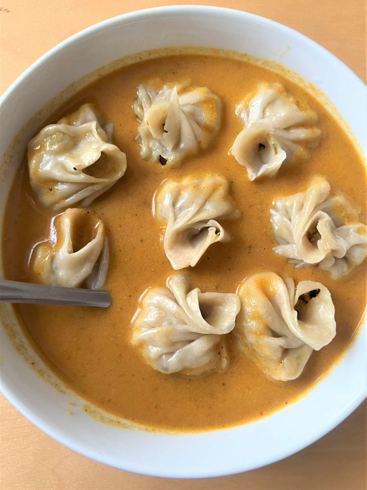

Momo

Description
LMomo is a type of steamed filled dumpling in Tibetan and Nepali cuisine that is also popular in neighbouring Bhutan and India. Momo is usually served with a sauce known as achar influenced by the spices and herbs used within many South Asian cuisines.
Ingredients
- Meat
- Onion
- Garlic
- Ginger
- Momo masala
- Flour
Steps
- Mix the meat and seasonings for fillings
- Make a dough from flour
- Make small round circles from the dough
- Put the fllings into the round circles of dough
- Start pack the dough and fillings
- Put it in steamer
Back to homepage